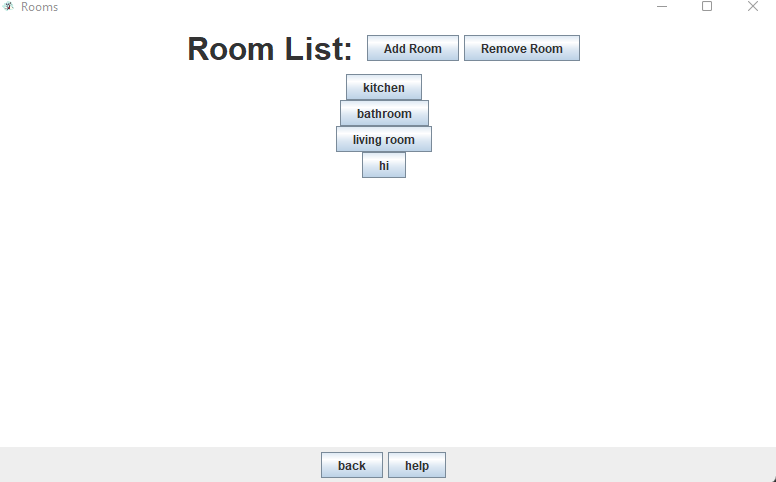
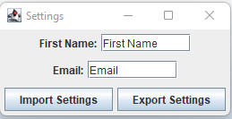

Basic Information:
- Language: Java(99.7%), CSS (0.3%).
- Project type: team of 4
- My Contributions: Mostly frontend. I am responsible for the entire UI and ensuring it functions with backend.
When the program launches you will be at this page. Settings allows you to import/export your personal settings, as this app can be used for multiple profiles. To continue, press the large 'H.O.M.E' button. This application has three main features:
- Creating a list of rooms.
- Creating a list of appliances.
- Creating a list of uploaded documents.
Simple UI:
The UI is simple and easy to use. The organization goes Room List -> Application List -> Document List. If we click on 'kitchen', for example, we will be taken to an 'Appliance List' page that houses all of our kitchen appliances. From there, we would choose our appliance to view the relevant documents. Each page allows you to easily add or remove an item, go back to the previous page, or click the 'help' button if you're stuck.
More:

- Customize Room List
- Customice Appliance List.
- Customize Document List.
Code:
I have included a snippet of my code below, featuring one of the UI implementations I provided for the app. (All lines prior to constructor have been removed to conserve space on this page, see gitHub for full code)
Document List Page UI
public Document_UI(Appliance currentAppliance, House house)
{
super("Documents");
documentPanel = new JPanel();
buttonPanel = new JPanel();
backPanel = new JPanel();
myAppliance = currentAppliance;
myHouse = house;
myDocumentList = myAppliance.getList();
addDocumenteName = new JTextField("New Document Name: ");
start();
setDefaultCloseOperation(JFrame.EXIT_ON_CLOSE);
}
/*
* Method that calls all methods to set up frame/panels
* @author Ella Gainey
*/
private void start()
{
setIconImage(new ImageIcon("./icons/icon.png").getImage());
setVisible(true);
setUpFrame();
setUpDocumentPanel();
setUpBackPanel();
pack();
setLocationRelativeTo(null);
startButtons();
}
/*
* Adds panels and sets background (sets up the frame)
* @author Ella Gainey
*/
private void setUpFrame()
{
setPreferredSize(new Dimension(800, 500));
documentPanel.setBackground(Color.WHITE);
buttonPanel.setBackground(Color.WHITE);
add(documentPanel, BorderLayout.NORTH);
add(buttonPanel, BorderLayout.CENTER);
add(backPanel, BorderLayout.SOUTH);
repaint();
revalidate();
}
/*
* This method sets up the bottom panel of JFRAME and adds a back button to go back to the Appliance_UI
* and a help button if the user needs assistance operating the UI
* @author Ella Gainey
*/
private void setUpBackPanel() {
JButton backButton = new JButton("back");
JButton helpButton = new JButton("help");
helpMessage = "TO ADD DOCUMENT: \nclick 'add document' button. You must enter at least one character for a document to be added. \nYou will be prompted to pick a file from your computer after this. You can not edit this so make sure you name correctly \n"
+ "TO DELETE DOCUMENT:\n click 'remove document' button. You must enter name of document exactly or it won't be deleted.\n"
+ "TO OPEN DOCUMENTS: \nclick button for the named document to see its contents\n"
+ "TO GO BACK TO APPLIANCE SCREEN: \nclick the back button found next to the help button";
backButton.addActionListener(new ActionListener() {
@Override
public void actionPerformed(ActionEvent e) {
//calls back method from inside house class
myHouse.back();
}
});
helpButton.addActionListener(new ActionListener() {
@Override
public void actionPerformed(ActionEvent e) {
JOptionPane.showMessageDialog(null, helpMessage, "help", JOptionPane.PLAIN_MESSAGE);
}
});
backPanel.add(backButton);
backPanel.add(helpButton);
}
/*
* Sets up the document panel. This is where the buttons are to add a new document
* or to delete an existing document
* @author Ella Gainey
*/
private void setUpDocumentPanel()
{
JLabel documents = new JLabel(myAppliance.getName().toUpperCase() + "'S Document List: " );
documents.setBackground(Color.WHITE);
documents.setFont((new Font("Chalkboard", Font.BOLD, 28)));
documentPanel.add(documents);
JButton addDocument = new JButton("Add Document");
addDocument.addActionListener(new ActionListener() {
@Override
public void actionPerformed(ActionEvent e) {
newDocument(); //newDocument method called if addDocument button is clicked
}
});
JButton removeDocument = new JButton("Remove Document");
removeDocument.addActionListener(new ActionListener() {
@Override
public void actionPerformed(ActionEvent e) {
deleteDocument(); //deleteDocument method called if removeDocument button is clicked
}
});
documentPanel.add(addDocument);
documentPanel.add(removeDocument);
pack();
}
/*
* Called if the addAppliance button is clicked on the GUI by the user
* @author Sam Spillers
* @author Ella Gainey
* @author Timmy Roma
*/
private void newDocument() {
isEmpty = false;
String newDocumentName = JOptionPane.showInputDialog( null, "Enter name for new document: ", "New Document Name", JOptionPane.PLAIN_MESSAGE);
//checks if user hit cancel on the option pane (this check prevents null pointer exceptions from occurring)
if (newDocumentName != null) {
if (newDocumentName.isEmpty()) {
isEmpty = true; //sets boolean to true meaning that the user didn't enter a document name
//i.e. empty string was used
}
//only go through the process of a new document if the user didn't hit cancel
//and the user gave a name (no empty strings allowed)
if (newDocumentName != null && isEmpty == false) {
JFileChooser myChooser = new JFileChooser(".");
int check = myChooser.showOpenDialog(null);
File newFile = null;
if (check == JFileChooser.APPROVE_OPTION)
{
newFile = myChooser.getSelectedFile();
}
myAppliance.create(newDocumentName, newFile);
newButton(newDocumentName);
}
//saving house file
try {
House.saveHouse(myHouse, "houseFile.hf");
} catch (IOException e) {
e.printStackTrace();
}
repaint();
revalidate();
repaint();
revalidate();
}
}
/*
* If user hits the removeDocument button in the GUI this is called.
*/
private void deleteDocument() {
String deleteDocumentName = JOptionPane.showInputDialog( null, "Enter name of appliance to be deleted: ", "Delete Appliance", JOptionPane.PLAIN_MESSAGE);
myAppliance.destroy(deleteDocumentName);
myDocumentList = myAppliance.getList();
//saving house file
try {
House.saveHouse(myHouse, "houseFile.hf");
} catch (IOException e) {
e.printStackTrace();
}
startButtons();
repaint();
revalidate();
}
/*
* Method to create a new button to display on button panel on the Document Jframe
* @param name is the name of the new button to be created (this name is given from user input)
* @author Ella Gainey
*/
private void newButton(String name) {
JButton documentButton = new JButton(name);
buttonPanel.add(documentButton);
BoxLayout boxLayout1 = new BoxLayout(buttonPanel, BoxLayout.Y_AXIS);
buttonPanel.setLayout(boxLayout1);
documentButton.setAlignmentX(Component.CENTER_ALIGNMENT);
documentButton.setFocusable(false);
documentButton.addActionListener(new ActionListener() {
@Override
public void actionPerformed(ActionEvent e) {
myDesktop = Desktop.getDesktop();
try {
myDesktop.open(myAppliance.getDocument(name).getFile());
} catch (IOException e1) {
e1.printStackTrace();
}
myDesktop = null;
}
});
pack();
repaint();
revalidate();
}
/*
* This method is called to generate buttons based on documents that were added previously and saved in house file
* @author Ella Gainey
*/
private void startButtons()
{
//first clear the panel of any buttons
buttonPanel.removeAll();
//add all buttons in the document list back in (if list is empty then nothing will be added)
for(Iterator listIterator = myDocumentList.iterator(); listIterator.hasNext();)
{
Document temp = listIterator.next();
//calls the new Button method in the DOCUMENT_UI class
newButton(temp.getName());
}
}
}